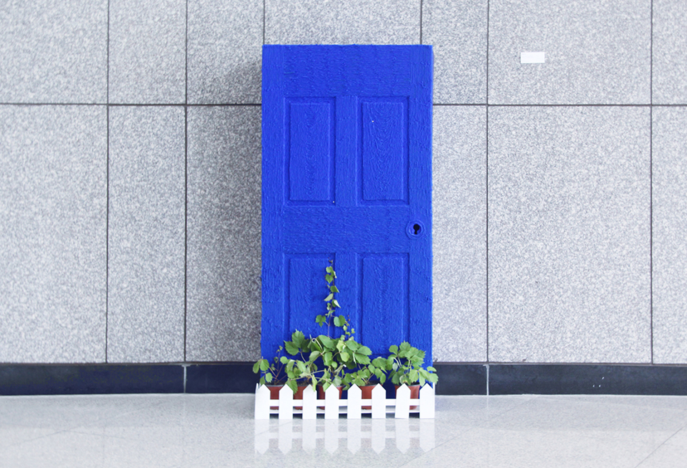
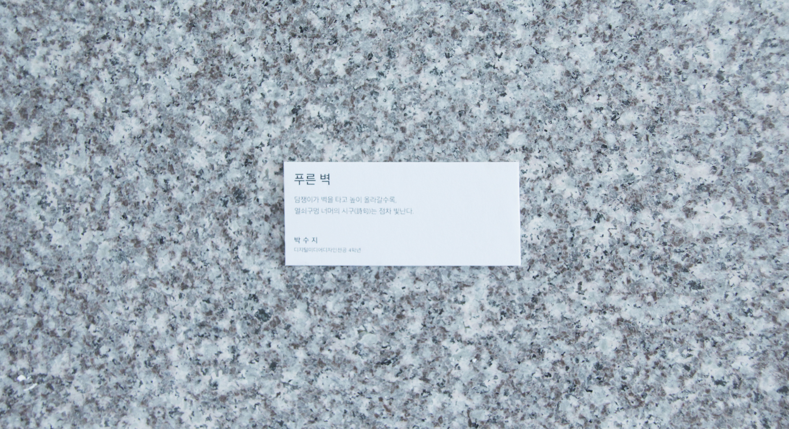
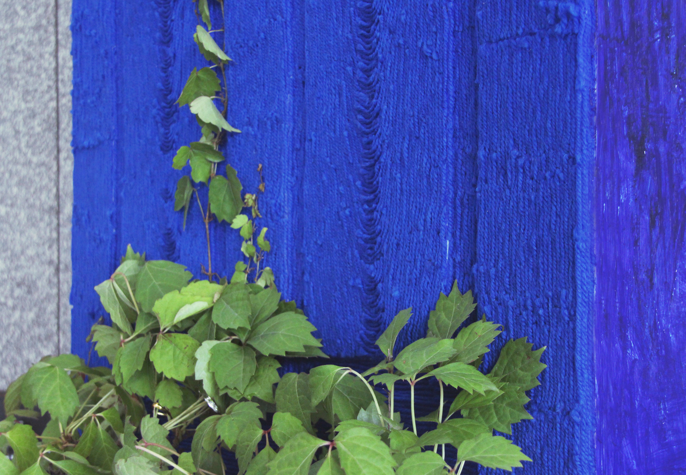
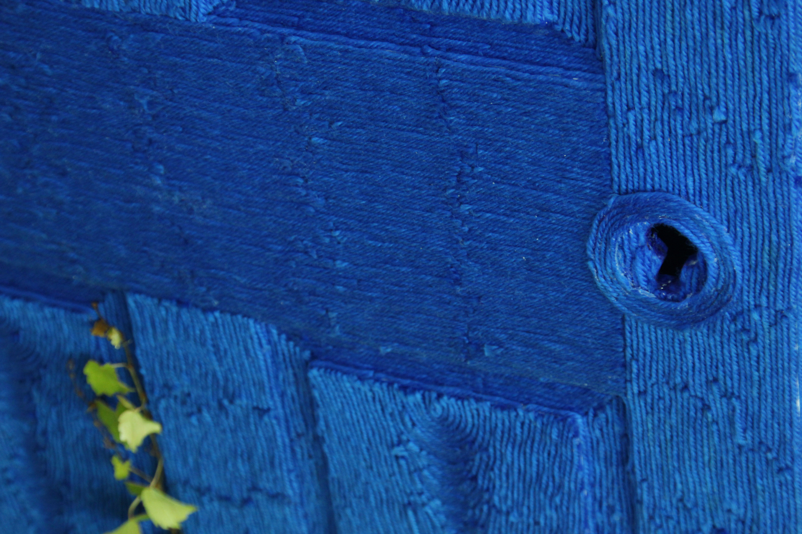
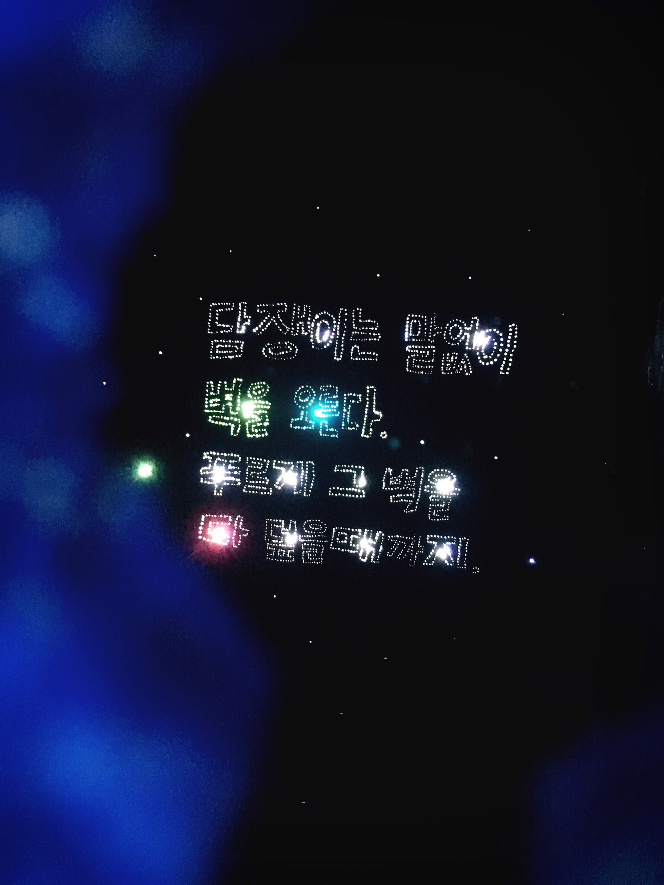

푸른 벽 (Blue Wall)

Media Art. 2017.
푸른 벽(Blue wall)은 ‘나의 노력’에 대한 의미를 담고 있는 구체화 작업이다.
도종환 시인의 ‘담쟁이’라는 시를 인용하면,
이것은 벽 어쩔수 없는 벽이라고 우리가 느낄 때, 담쟁이는 멈추지 않는다.
푸르게 그 벽을 다 덮을 때까지 절대 멈추지 않는다.
내 스스로에게 어떤 의미를 갖고있던지 간에 그 노력(담쟁이)은 끊임없이 자라나며 벽을 오른다.
담쟁이가 자라나며 벽을 덮어갈 수록 안쪽의 글자는 다양한 색과 밝기를 더해가며 변화한다.
그리고 마침내 그 푸르름이 벽을 온통 뒤 덮었을 때
열쇠구멍 너머 문 저편에선 그 아름다움이 빛난다.
지금 당장 눈에 보일지 않을지라도, 그것은 언제나 분명히 반짝이며 존재한다.
-
This is a materialization work that embodies the meaning of ‘my efforts’.
There is a poem called 'Ivy' by Jong-Hwan Do.
If you cite the verse of the poem for a moment, there is this verse.
"When they feel that this wall is an unavoidable wall, the ivy does not stop.
they will never stop until cover the wall in blue. "
Sometimes when I work I feel that my efforts are 'insignificant'. I was wandering, troubled, and confused.
However, at one point, I thought that the efforts that I had accumulated one by one were sure to contain small sparkles.
Although it is not visible right now, it is always clearly shining and present.
So I wanted to make a work that would give comfort to myself and to many people who had a similar problem,
and I was plan an installation called "Blue Wall" that was inspired by the 'ivy'.
All the doors on the outer surface were made of wool, one by one. I wanted to put the meaning of 'effort' into a single line.
'Door' is only a wall if you close it, but if you open your hand out, it means 'passage'. It also means 'entrance' to my inner, closed mind.
So the inner 'growing inner side' can not notice at all before seeing through the keyhole.
While I am not sure (while the door is closed), my efforts are constantly growing and climbing the wall.
As the ivy(efforts) grows and covers the wall, the value of the sensor changes,
and the letters on the inside change by adding various colors and brightness depending on the recognized value.
And finally, when the 'blue' covers all over the wall, the beauty shines inside the door over the keyhole.
-
Arduino uno, NeoPixel strip, CDS, IVY pots, Wool, Acrylic panel
프로젝트 링크: https://vimeo.com/222469523
   